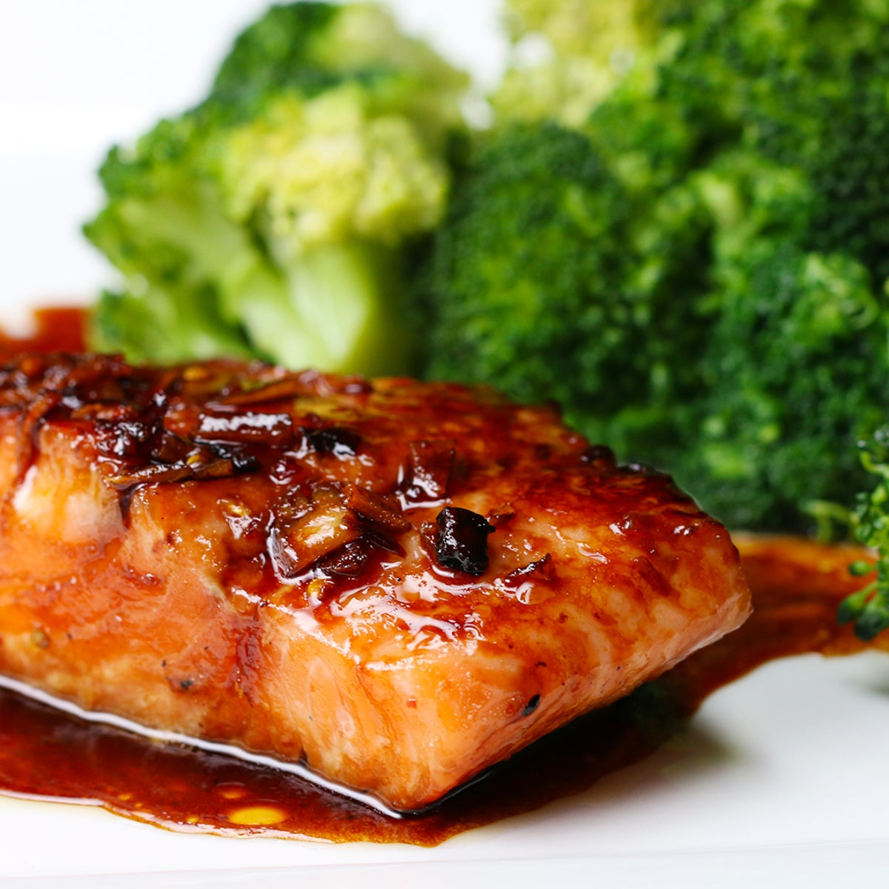

Ginger and Chilli Salmon

For a quick and healthy meal that is a firm favourite, try this weeknight delight. The amount of chilli is only a guide and can be changed to the amount of heat that you fancy. This dish is fantastic served with rice.
Ingredients
- 2 Salmon fillets
- 1 thumb sized piece on ginger
- 2 teaspoons of chilli flakes
- The juice of 1 whole lemon
- 50 ml of soy sauce
Steps
- Preheat the oven to 200°C
- Place the 2 salmon fillets in a small over proof dish that is about the same size as the fillets laying flat.
- Add the juice of the lemon and the soy sauce over and around the salon fillets.
- Finely chop the ginger and place this on top of the fillets.
- Sprinkle the chilli flakes over each of the 2 fillets.
- Cover the fillets with the lid and cook in the oven for about 20 minutes